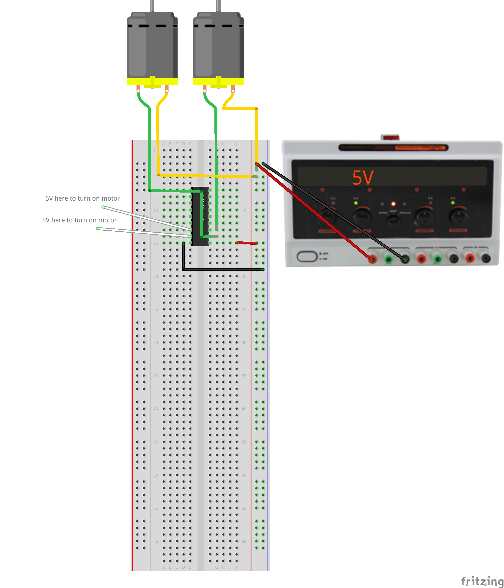

Interface multiple motors using an integrated driver.
An integrated circuit (aka IC or chip) is a multi-component circuit fabricated on a single piece of semiconductor material. The complexity ranges from a just a few transistors up to billions of components in a high-end CPU chip.
This exercise uses a ULN2803 driver which provides the equivalent of eight individual transistor drive circuits in a single package, enough to drive eight relays or turn eight motors on an off. It is polarized, so each channel is either on or off and conducts only one direction. The outputs are open-collector, which in practice means they sink a positive current to a common ground.
Unlike the MOSFET, the bipolar transistors have a noticeable voltage drop and dissipate more power for the same output current. We use these parts because they are inexpensive, robust, and have the convenience of multiple channels.
Note that the inputs are engineered for 5V logic, but the outputs are rated to 50V, so the load can be a DC load at a substantial higher voltage than the logic. Each output is rated for 500 mA maximum current, but in practice the maximum load that can be switched is a function of the overall dissipation. E.g., running too many outputs at too high a current may exceed the total heating limit, which is a function of the package type and heat-sinking.
The outputs include clamp diodes connected to the COM terminal which help absorb voltage spikes typically created when motors or relay coils turn off.
The actual topology of each channel is a Darlington pair, a circuit which uses two bipolar transistors cascaded for higher gain. The data sheet includes a schematic approximating the circuit for each channel.
The logic symbol is drawn as a triangle with a circle at the output representing an inverted output which is active-low. In practice, the ‘low’ output is generally sinking power through the load, so it still represents the ‘active’ state, i.e., a high input turns the load on.
Like the MOSFET circuit, note hat the input and output circuits are not isolated from each other.
